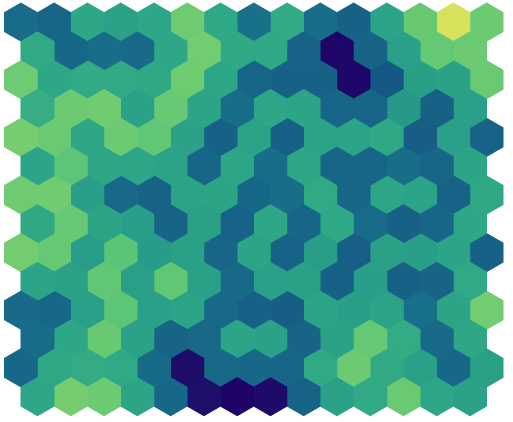
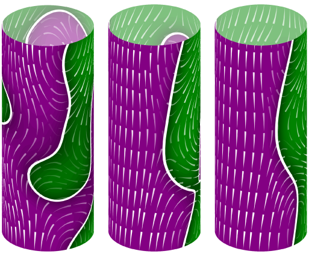
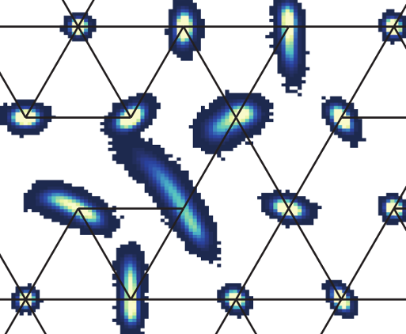

I am Chief Technology Architect with Smith Institute, where I previously held the positions of Technical Director, Director of Data Science and Mathematical Consultant.
Before this, I worked in academic research focussing on applied mathematical modelling of biological and bio-inspired systems. Following my undergraduate and doctoral degrees in Mathematics at Trinity College, Cambridge, I took up a postdoctoral research position at The University of Western Australia. I then returned to the UK, working first in a Junior Research Fellowship back at Trinity College, Cambridge followed by a Hooke Research Fellowship at the Mathematical Institute, Oxford.



Daniel B. Wilson, Francis G. Woodhouse, Matthew J. Simpson, and Ruth E. Baker, Communications Physics 4, 232 (2021)
Philip Pearce, Francis G. Woodhouse, Aden Forrow, Ashley Kelly, Halim Kusumaatmaja, and Jörn Dunkel, Nature Communications 10, 5368 (2019)
Daniel B. Wilson, Ruth E. Baker, and Francis G. Woodhouse, SIAM Journal of Applied Mathematics 79, 1892–1915 (2019)
Alexander P. Browning, Francis G. Woodhouse, and Matthew J. Simpson, Proceedings of the Royal Society A 475, 20190146 (2019)
Aden Forrow, Francis G. Woodhouse, and Jörn Dunkel, Physical Review X 8, 041043 (2018)
Francis G. Woodhouse, Henrik Ronellenfitsch, and Jörn Dunkel, Physical Review Letters 121, 178001 (2018)
Daniel B. Wilson, Ruth E. Baker, and Francis G. Woodhouse, Physical Review E 97, 062301 (2018)
Francis G. Woodhouse, Joanna B. Fawcett, and Jörn Dunkel, New Journal of Physics 20, 035003 (2018)
Aden Forrow, Francis G. Woodhouse, and Jörn Dunkel, Physical Review Letters 119, 028102 (2017)
Francis G. Woodhouse and Jörn Dunkel, Nature Communications 8, 15169 (2017)
Francis G. Woodhouse, Aden Forrow, Joanna B. Fawcett, and Jörn Dunkel, Proceedings of the National Academy of Sciences (USA) 113, 8200-8205 (2016)
Hugo Wioland, Francis G. Woodhouse, Jörn Dunkel, and Raymond E. Goldstein,
Nature Physics 12, 341-345 (2016)
MIT News, Microbiology Society podcast
Bruce S. Gardiner, Francis G. Woodhouse, Thor F. Besier, Alan J. Grodzinsky, David G. Lloyd, Lihai Zhang, and David W. Smith, Annals of Biomedical Engineering 44, 222-233 (2016)
Francis G. Woodhouse, Bruce S. Gardiner, and David W. Smith, Journal of Theoretical Biology 368, 102-112 (2015)
Francis G. Woodhouse and Raymond E. Goldstein, Proceedings of the National Academy of Sciences (USA) 110, 14132-14137 (2013)
Cover image for issue 35
Aurelia R. Honerkamp-Smith, Francis G. Woodhouse, Vasily Kantsler, and Raymond E. Goldstein, Physical Review Letters 111, 038103 (2013)
Cover image for issue 3
Hugo Wioland, Francis G. Woodhouse, Jörn Dunkel, John O. Kessler, and Raymond E. Goldstein, Physical Review Letters 110, 268102 (2013)
Francis G. Woodhouse and Raymond E. Goldstein,
Physical Review Letters 109, 168105 (2012)
Highlighted in a Physics Focus by P. Ball, Physics 5, 117 (2012)
Francis G. Woodhouse and Raymond E. Goldstein, Journal of Fluid Mechanics 705, 165-175 (2012)